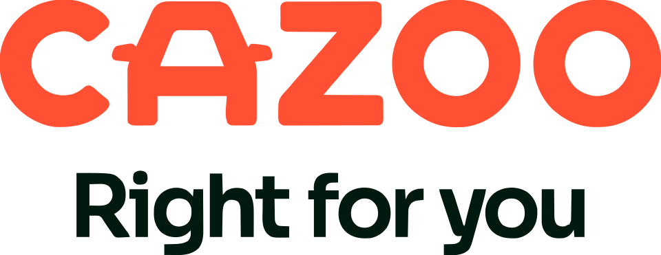

홈 > 브랜드 매거진 > Ding
Ding
여기서 다룬 Ding은 영국 HomeServe가 만든 가정 수리·집수리 서비스 앱이다(아일랜드 모바일 충전사 아님). 트레이드맨과 고객을 잇는 마켓플레이스로, 브랜딩은 런던 스튜디오 Wildish & Co.가 맡았다.
산업 분야 기술·전자 · 공개 등급 편집 검수 · 브랜드 평가 4 ★
Di
Ding
한눈에 보는 브랜드
Ding은 영국 HomeServe가 만든 가정 수리·집수리 서비스 앱으로, 트레이드맨과 고객을 연결하는 마켓플레이스형 서비스다. 2024년 말 무렵 출시되었으며, 런던 브랜딩 스튜디오 Wildish & Co.가 네이밍부터 브랜드 전략, 비주얼·버벌 아이덴티티, 일러스트, 모션까지 전체를 맡았다.
브랜드 관점
Ding 항목은 기업 연혁보다 시각 아이덴티티의 완성도를 읽는 데 적합한 자료입니다. Digital Products & Services 분류 안에서 어떤 브랜드가 로고, 타입, 컬러, 아트 디렉션, 애플리케이션을 하나의 시스템으로 묶는지 보여주며, 산업 정보와 별도로 BI/CI 디자인 레퍼런스 축을 형성합니다.
일부 상세 아이덴티티는 멤버십 잠금 상태로 기록되어 공개 메타데이터 중심으로만 정리됩니다.
브랜드 아이덴티티
핵심은 'Ding'이라는 동명의 집 모양 마스코트로, 지붕에 얼굴이 있고 다리가 달린 의인화된 캐릭터이며 여러 표정과 Big·Odd·Urgent·Tricky 같은 '작업' 캐릭터, 30종 이상의 일러스트로 확장된다. 색상은 세 가지 톤의 오렌지를 주조색으로 하고 그린·옐로·블루를 보조색으로 써 에너지와 현대성을 강조하는 '도파민 디자인'을 표방한다.
서체는 Work Sans를 사용하며, 'Don''t wing it, Ding it' 같은 밝고 구어체적인 톤으로 딱딱한 업계 관행과 차별화했다.
제품과 서비스
Ding 항목의 제품·서비스 정보는 일반 상품 카탈로그가 아니라 브랜드 아이덴티티 산출물 기준으로 정리됩니다. 전체 에셋 19개, 이미지 8개, 영상 11개, 로컬 저장 이미지 8개를 통해 정지 이미지와 영상 에셋의 비중을 확인할 수 있고, 이는 로고 적용, 컬러 시스템, 캠페인 톤, 패키지 또는 공간 적용 가능성을 검토하는 출발점이 됩니다.
사람들
타임라인
BI/CI 변천사
확인된 BI/CI 이미지가 아직 없습니다.
함께 읽을 브랜드
Go
Goolf
기술·전자 · 편집 검수GoolfGoolf는 2022년에 기록된 Digital Products & Services 계열의 브랜드 아이덴티티 사례입니다. Wildish & Co.가 아이덴티티 작업의...
A-
A-TO-B
기술·전자 · 편집 검수A-TO-BA-TO-B는 2016년에 기록된 Retail 계열의 브랜드 아이덴티티 사례입니다. Stockholm Design Lab가 아이덴티티 작업의 디자이너로 기록되어 있습...
An
Analog
기술·전자 · 편집 검수AnalogAnalog는 2025년에 기록된 AI Brands 계열의 브랜드 아이덴티티 사례입니다. Mucho가 아이덴티티 작업의 디자이너로 기록되어 있습니다. 로고, 타입,...
Bi
Big Cartel
기술·전자 · 편집 검수Big CartelBig Cartel는 2025년에 기록된 Digital Products & Services 계열의 브랜드 아이덴티티 사례입니다. How&How가 아이덴티티 작업의 디...

기술·전자 · 편집 검수CazooCazoo는 2025년에 기록된 Digital Products & Services 계열의 브랜드 아이덴티티 사례입니다. Fold7Design가 아이덴티티 작업의 디자...
Ho
Hook AI
기술·전자 · 편집 검수Hook AIHook AI는 2025년에 기록된 AI Brands 계열의 브랜드 아이덴티티 사례입니다. Koto가 아이덴티티 작업의 디자이너로 기록되어 있습니다. 로고, 타입,...
 기술·전자 · 편집 검수Lyft
기술·전자 · 편집 검수LyftLyft는 2025년에 기록된 Digital Products & Services 계열의 브랜드 아이덴티티 사례입니다. Koto가 아이덴티티 작업의 디자이너로 기록되어...
Ro
Roblox
기술·전자 · 편집 검수RobloxRoblox는 2025년에 기록된 Digital Products & Services 계열의 브랜드 아이덴티티 사례입니다. DixonBaxi가 아이덴티티 작업의 디자이...